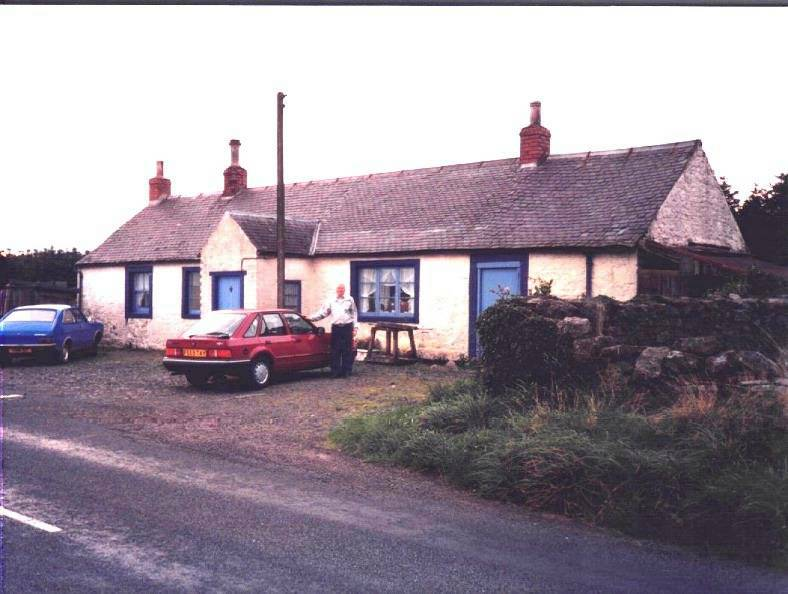

The Family Chronicle
No. 109 December 20, 2005
____________________________________________________________________
Before

After

The top photo is a repeat of a photo from Chronicle No. 69 and shows Callister Hall, Scotland, where my Great Grandfather was born in 1807. The bottom photo, thanks to Joy Ayr, shows Callister Hall in 2003.
Follow-up
Donald Edge wrote:
Your chronicle of the Victoria Knitting Club reminded me that in the Upper Black River School in the 1940's we set aside some time for knitting things for the troops overseas. The older students
knitted scarves and mittens, and the youngsters, me included, knit "wristers". I remember the school receiving a packet containing letters addressed to each of us by name (and all mysteriously similar in phrasing). My letter, addressed to "Master Donald Edge," thanked me for the “wristers” and went on to say how I was helping win the war. All of us (all twelve or so) were swelled with pride for days, but I don't remember my knitting skills improving, and of course the war ended in relatively short order after the Upper Black River knit goods arrived in Europe.
And Dorothy (MacKay) Lind wrote:
I also remember learning to knit at the expense of our soldiers. I believe it was at the Little Branch School in 1942-43.
We had Red Cross meetings on Friday afternoon. There I learned to knit a washcloth which had a border about 8 stitches wide and the inner part was a basket weave pattern - 8 knit, 8 purl all across and the opposite for the return row. That we did for 8 rows and then we changed the order. Voila, a basket weave pattern. Due to the lack of experience, although I really did try, it was rather misshapen because of loose tension on the yarn here and too tight tension on the yarn there. I have since mastered the tension part, thank goodness, so things turn out as they should most of the time.
Christmas Tree
Our Christmas tree is up and decorated – a bit earlier than usual this year but some folks were dropping by and we thought that having our tree decorated would add to the Christmas spirit.
Whenever possible, I cut my own tree and I was pleased to be able to do so this year again. It is a six-foot spruce (I prefer balsam fir). It is a nicely shaped tree, not my usual “Charlie Brown” tree. Over the years, the only person who consistently thought I brought home a nice tree was my mother.
The first time I ever selected and cut a Christmas tree was, I think, a few days before Christmas in 1945.
It was a sunny but a bit blustery that day as I set off to find a tree – the snow was up to my knees, or at least above the tops of my rubber boots. With axe in hand, I went down the hill and then walked back along the brook. There were many evergreens but none seemed suitable.
When I reached the little backfield, I decided to look at the new growth along the line. Nothing suitable. By then I was getting cold and my rubber boots were filling with snow. I crossed onto Uncle Jim’s property. Lots of trees there but none were Christmas tree size.
I decided then to look up and spotted a fine looking top on a large tree. With the aid of my trusty “double bitter”, the tree was soon prostrate on the ground. I cut off a ten-foot length and headed for home “dragging the tree behind me.” I was a tired teenager with feet both wet and cold when I reached home from that venture.
In all the years I cut trees, except this one, my tree, even after I measured and cut off the butt, was always a foot taller than our ceiling would allow. That one was no exception. After finally getting it right and making a stand for it; it stood proudly in the corner of the parlour awaiting the trimmings.
First the star for the top – oops! I hadn’t considered that in my calculations. Some judicial pruning with the butcher knife and the star stood proudly on the top.
Then came ornaments, layers of silver or silver and red rope (garland) and then the carefully hung icicles – most having been carefully stored since the previous year. Christmas tree trimmings were almost sacred or family heirlooms; the only new items would be a fresh package of icicles. Everything else, including icicles, was carefully removed, stored and used again in following years.
Our Christmas trees were always heavily laden with garland and icicles much more so than trees of today. A visit to the Cameron’s, Jim and Janie, was a real treat because they had real candles on their tree that Mrs. Cameron would light when we came visiting.
Merry Christmas to all and to all a goodnight
The Family Chronicle (Copyright) is an occasional newsletter published by Don Glendenning and posted on the family website. It is intended to share information about my family, community and the times in which I grew up. While every effort is made to be accurate, errors are likely to occur. Comments, enquiries and information may be sent to 62 Queen Elizabeth Drive, Charlottetown, PEI, C1A 3A9. Tel: 902 892 5859. Email: dglende@auracom.com Web: www.glendenning.net/don